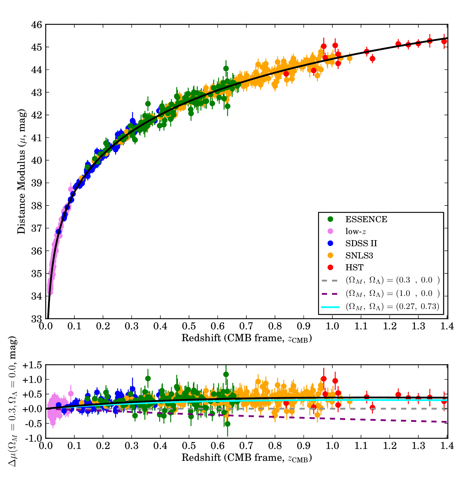
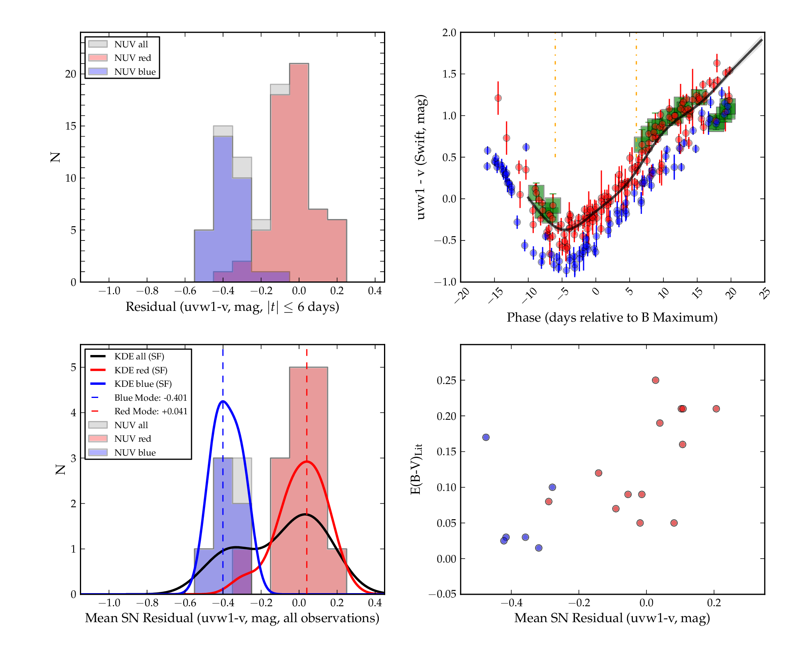
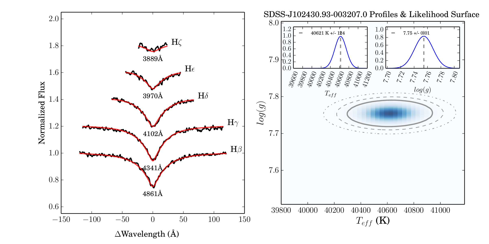
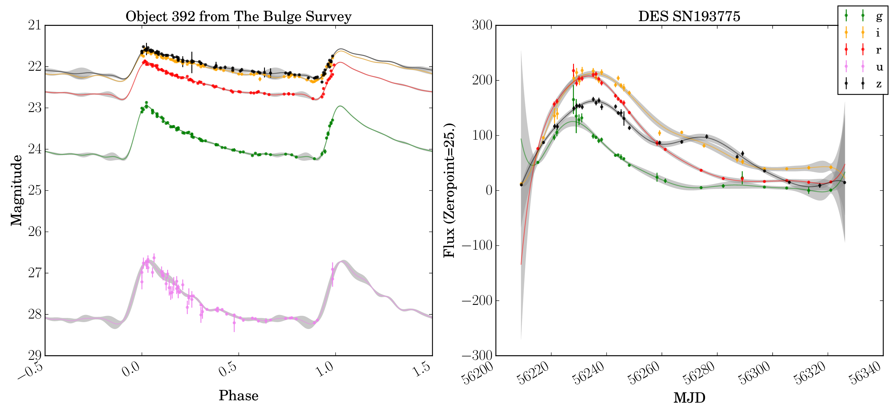
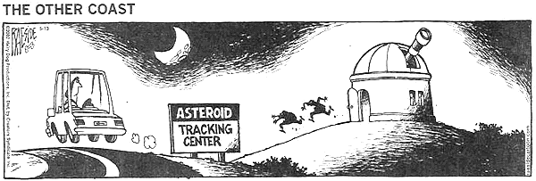

| Gautham Narayan |

|
| Gautham Narayan |
|
The Big Picture
The most pressing question in fundamental
physics and cosmology is understanding the nature of dark energy. My research
is at the forefront of learning how best to use type Ia supernovae
(SN Ia) to deduce its mysterious properties. To that end, I have been
involved in nearly every stage of astrophysical research, including planning
and leading large survey programs, reduction and analysis of multi-terabyte
datasets, and developing sophisticated statistical models for unbiased
inference from the data.
You can read more about my research below. I've elected to present projects in
chronological order, to give you a sense for the evolution of ideas.
SN Ia Cosmology with ESSENCE
Since the discovery of the accelerating expansion of the Universe in 1998 [15, 17], type Ia supernovae (SN Ia) have remained our most sensitive probe of dark energy. Many of the members of the High-Z Supernova Search Team came together as the ESSENCE (Equation of State: SupErNova tracE Cosmic Expansion) project, which I joined at the start of my graduate studies in 2005. ESSENCE aimed to observe 200 SN Ia over seven years, in R and I at a median redshift of 0.4, and constrain the equation of state of dark energy, w, to 10%. I was heavily involved in schedule optimization, imaging, spectroscopic follow-up, pipeline development, data reduction and analysis.
ESSENCE has provided many valuable insights to the supernova & cosmology communities, and has helped define the incisive questions that my current research focuses on answering. An early analysis of the first four years of survey data [24], discovered that SN Ia studies were very sensitive to how the effects of dust are disentangled from intrinsic color variations. Fundamentally, SN Ia cosmology rests on a comparison between the luminosity of nearby and distant supernovae. The difference in redshift necessitates that this comparison is done between different rest-frame and observer-frame passbands. The difference in comoving volume implies a vastly different number density of events on the sky. This, in turn, necessitates completely different observing strategies for nearby and distant supernovae, and the cosmological experiment must combine and compare data from different surveys, each with their own distinct pathologies. Consequently, the covariance matrix between SN Ia-derived cosmological parameters and the photometric calibration of constituent surveys has a complex structure.
My thesis work completed the final analysis of ESSENCE photometry and spectroscopy. I made several key improvements to the pipeline used by ESSENCE and worked on reducing the photometric uncertainties in the ESSENCE survey. I have developed codes to process photometric data obtained with the CTIO 4 m telescope, established a network of tertiary standards tied to the spectrophotometric standard BD+17∘4708 across the survey fields, and re-calibrated the natural photometric system to avoid various sources of systematic errors present in the 4 year data release [9]. My efforts have reduced the photometric uncertainties to the ~ 1% level across 7 years of ESSENCE data. The goal of the ESSENCE project and my thesis is a ~ 10% measurement of w, and my work is critical to attaining that level of precision. I have led the analysis effort on ESSENCE, and published the entire calibrated 7-year ESSENCE dataset [13], and the data have been made publicly accessible through the Open Supernova Catalog [3].
Pan-STARRS and Supernova Demographics
The Pan-STARRS Medium Deep Survey (MDS) aimed to reduce the effect of photometric systematics on cosmological inference with a single homogeneous dataset with both nearby and distant SN Ia. Pan-STARRS produced significantly deeper imaging than was possible with SDSS, and access a considerably larger volume. Much of the challenge of wide-area surveys comes in developing the logical structures and algorithms to process the large data volumes produced — to “drink from the fire hose.” Along with Armin Rest and Mark Huber, I adapted the search pipeline developed for the ESSENCE to Pan-STARRS. To date, this pipeline has processed more than 900 TB of data, and discovered more than 450 spectroscopically confirmed SN. I was involved in the reduction, and follow-up of various candidates, and participated heavily in the first-year release and analysis of SN Ia data [16, 19].
However, even as Pan-STARRS observed, further research indicated that SN Ia required unphysical reddening laws, with RV < 2.1 to minimize the dispersion in Hubble residuals [4], that differences in UV colors of SN Ia could bias w by as much as 30% (Milne), weak but significant trends of Hubble residual with host-galaxy properties [6], such as host luminosity & specific star formation rate [21], as well as correlations between “independent” parameters derived from SN Ia light curves [5], correlations of the parameters with redshift indicating cosmological bias [7], as well as distinct sub-classes in what was long thought to be a family single-parameter of events [e.g. 1, 2, 12, 22].
Some of these can be addressed by observations outside the optical. SN Ia are not only better standard candles in the infrared, but are significantly less affected by host-galaxy extinction at those wavelengths. Along with Kaisey Mandel, I have also worked on developing a hierarchical Bayesian model for SN Ia [8] that we are currently adapting for use in the observer-frame at high-redshift. These two models, MLCS3 and BayeSN, developed from the most current, high-precision nearby samples, will become the standard for extracting distance moduli from high-z SN Ia. However, we must still understand the diversity of SN Ia events, and if they do not form a single-parameter family of events, this approach alone will not suffice.
I have been working with Prof. Peter Milne at UA to study the ultraviolet properties of SN Ia. Type Ia supernovae have been considered a single-parameter family, where variation in peak luminosity can be correlated with decline rate, or other measures of light curve shape. Milne et al. [10] has suggested that there are two groups of SN Ia exhibiting different ultraviolet colors, reflecting differences in ejecta velocity from optical spectroscopy. Despite the limited number of supernovae with Swift uvw1 measurements, I was able to construct robust color templates for a subset of these objects. Constructing the mean residuals to the templates allows to separate the supernovae into two much more distinct groups, while kernel density estimation is used to robustly and automatically identify the two groups. I simulated the effect of two groups with different UV color, and showed that it biases the dark energy equation of state in the same direction as the biases currently found by SN Ia cosmological studies [11].
Accordingly, my research has established the need for new, more detailed observations that, combined with the vast amount of contextual information in large datasets, will allow us to significantly deepen our understanding of the nature of SN Ia. This will allow us to truly disentangle these effects, rather than modeling them with a purely empirical set of relations with ad-hoc parameterizations.
Establishing High-Precision Spectrophotometric Standards
The level of photometric precision I achieved with ESSENCE & Pan-STARRS will be insufficient for current and future wide-field SN Ia surveys that aim to look for evidence of evolution in the dark energy equation of state with redshift. These surveys are still limited by the lack of calibrated spectrophotometric standards within the appropriate dynamic range. The best approach to address this shortcoming is to establish the system response and tie absolute flux calibration to synthetic laboratory sources. To this end, I have worked on a novel transmissive flat-field screen for the Pan-STARRS PS1 telescope [20]. The system uses a tunable laser to measure the PS1 throughput per pixel, relative to a high-precision NIST photodiode. But laboratory sources cannot capture the effect of atmospheric variations on broadband photometry. Such studies will require observations of astrophysical sources with well measured spectral energy distributions (SEDs). These considerations motivated my involvement with Dr. Abhijit Saha’s program to establish a spectrophotometric network of faint DA white dwarfs using a combination of Hubble Space Telescope and ground-based observations.
With their simple pure hydrogen atmospheres, DA white dwarfs are the most reliably modeled astrophysical sources that can serve as spectrophotometric standards. We were awarded 78 orbits (HST GO programs 12967 and 13711, P.I.: Saha), and I helped develop the Phase II proposal for both proposals. I developed an automated parallelized pipeline to obtain, calibrate, and photometer WFC3 images of our standards, and tie them to the HST primary flux standards. As we sought faint standards, our targets are necessarily more distant and are subject to non-negligible interstellar reddening. I applied my experience modeling SN Ia and the dust in their environments to this problem, and we have analyzed data taken with the HST during Cycle 20. I led the analysis effort and published first results, demonstrating RMS residuals between observations and models of 3 millimag [14].
Our early analysis indicated a difference between the fiducial and true WFC3 zeropoints. I worked with Ralph Bohlin, Susanna Deustua, and others at STSci to identify differences in detector QE and flat-field normalization as the source of the discrepancy. We have corrected the zeropoints, and tested the fixed WFC3 data products. We obtained 60 hours of follow-up time on the Las Cumbres network of telescopes to study variability, and I developed the scheduler to optimize our observations over the 2017A semester1 . I am in the process of developing a new, fully hierarchical Bayesian framework to infer both intrinsic white dwarf properties for the full dataset2 , as well as the three HST primary flux standards, GD71, GD153, and G191B2b. This will extend the CALPSEC system down to V = 20 mag and become the primary photometric reference for future surveys.
Machine Learning to Identify & Characterize Transients for LSST
The Large Synoptic Survey Telescope (LSST), the Dark Energy Survey (DES), Zwicky Transient Factory (ZTF) and other future surveys will be spectroscopically limited. I have previously worked on the development of one of the first photometric classifiers and redshift estimators for SN Ia [23]. However, the true challenge is searching petabytes of images to find and classify all known variable and transient sources of interest from sparse photometry and contextual information, and, perhaps more importantly, to identify the few truly exotic events in the data stream. This is an impressive scientific and computational challenge, and to tackle it head on, I have been working on the ANTARES project [18]. ANTARES (Arizona-NOAO Transient Alert and Response to Events System) is a NSF INSPIRE-funded (IIA-1344024) to develop an event broker capable of ingesting the entire LSST alert stream & auxiliary feeds in real-time, cross-match events against external catalogs, derive features from light curves, characterize understood classes of variability and transient behavior, and identify the most interesting events for prioritized follow-up studies.
I am the lead algorithms developer for ANTARES, and construct robust methods to derive features from poorly sampled light curves, help design the architecture and API, and I bridge the gap between the computer scientists, statisticians and astronomers on the project. I have assembled a large collection of labeled light curves of known transients and variables (you can see some examples above)- a “touchstone” - and a library of routines to construct smooth representations of them using Gaussian Process Regression. This set serves as the reference against which all new events are compared. It will also play a key role in creating realistic simulations of events observed with LSST’s cadence, to test our algorithms. I direct a large team of graduate students, and we have constructed a database containing SDSS, NED, 2MASS, Chandra, WISE and GAIA and other large catalogs for ANTARES, as well as visualizations for the system. I am assisting in the deployment of a multi-node compute cluster to host the entire system at NOAO. I will further develop algorithms to associate ANTARES alerts with these catalogs, and use what we know about these associations to help characterize these alerts.
ANTARES is presently the only full featured event broker under active development for the LSST-era. We have progressed sufficiently to demonstrate a realistic end-to-end system, and we will undergo an external review in December 2016. I am in charge of preparations for the review, and the first public release of our codebase in early 2017. We have already presented demos to the community at IAU, AAS and various workshops, including ”Hot Wiring the Transient Universe.” However, ANTARES has much more potential than I have described here, and in this era of big-data from wide-area surveys and large teams with myriad interests, my research and my ability to work as an integral member of large collaborations will be critical to new discoveries, and understanding the nature of dark energy.
Ancient History (maintained for amusement and archival purposes)

I've worked with Professor Linda French at Illinois Wesleyan University on the photometry of primitive objects.
The group has observed several C and D type asteroids. Of particular interest are the Damocloids.
The Damocloids are a group of asteroids with highly eccentric and inclined orbits, similar to those of Halley Family Comets.
Several Damocloids have already exhibited cometary activity and the dissimilarity of their orbits and Jupiter Family Comet orbits lend credence to the hypothesis.
Broadband photometry of Damocloid nucleii can provide valuable surface information and possibly insight on HFC nucleii. We observed comet C/2002 CE10(LINEAR)
near opposition but photometry of the nucleus was not possible as the object had developed coma during this period.
The group has also examined several Trojan asteroids. We are interested in the solar phase angle relation for these objects, and if they exhibit the same kind of opposition effect as main belt asteroids.
I am responsible for the image reduction and analysis of the objects, and was part of a one week observing run at the 0.9m at CTIO during October 2003.
Honors Thesis
Thesis Defense Presentation
References
[1] Foley, R. J., Narayan, G., Challis, P. J., Filippenko, A. V., Kirshner, R. P., Silverman, J. M., & Steele, T. N. 2010, Astrophys. J., 708, 1748
[2] Foley, R. J., et al. 2009, Astronom. J., 138, 376
[3] Guillochon, J., Parrent, J., Kelley, L. Z., & Margutti, R. 2016, ArXiv e-prints
[4] Hicken, M., Wood-Vasey, W. M., Blondin, S., Challis, P., Jha, S., Kelly, P. L., Rest, A., & Kirshner, R. P. 2009, Astrophys. J., 700, 1097
[5] Hicken, M., et al. 2009, Astrophys. J., 700, 331
[6] Kelly, P. L., Hicken, M., Burke, D. L., Mandel, K. S., & Kirshner, R. P. 2010, Astrophys. J., 715, 743
[7] Kessler, R., et al. 2009, Astrophys. J. Suppl. Ser., 185, 32
[8] Mandel, K. S., Narayan, G., & Kirshner, R. P. 2011, Astrophys. J., 731, 120
[9] Miknaitis, G., et al. 2007, Astrophys. J., 666, 674
[10] Milne, P. A., Brown, P. J., Roming, P. W. A., Bufano, F., & Gehrels, N. 2013, Astrophys. J., 779, 23
[11] Milne, P. A., Foley, R. J., Brown, P. J., & Narayan, G. 2015, Astrophys. J., 803, 20
[12] Narayan, G., et al. 2011, Astrophys. J. Lett., 731, L11
[13] —. 2016, Astrophys. J. Suppl. Ser., 224, 3
[14] —. 2016, Astrophys. J., 822, 67
[15] Perlmutter, S., et al. 1999, Astrophys. J., 517, 565
[16] Rest, A., et al. 2014, Astrophys. J., 795, 44
[17] Riess, A. G., et al. 1998, Astronom. J., 116, 1009
[18] Saha, A., Matheson, T., Snodgrass, R., Kececioglu, J., Narayan, G., Seaman, R., Jenness, T., & Axelrod, T. 2014, in Proceedings of the SPIE, Vol. 9149, Observatory Operations: Strategies, Processes, and Systems V, 914908
[19] Scolnic, D., et al. 2014, Astrophys. J., 795, 45
[20] Stubbs, C. W., Doherty, P., Cramer, C., Narayan, G., Brown, Y. J., Lykke, K. R., Woodward, J. T., & Tonry, J. L. 2010, Astrophys. J. Suppl. Ser., 191, 376
[21] Sullivan, M., et al. 2010, Mon. Not. R. Astron. Soc., 406, 782
[22] Wang, X., et al. 2009, Astrophys. J. Lett., 699, L139
[23] Wang, Y., Narayan, G., & Wood-Vasey, M. 2007, Mon. Not. R. Astron. Soc., 382, 377
[24] Wood-Vasey, W. M., et al. 2007, Astrophys. J., 666, 694
Last Updated: Jul 2017
Now built with vi and less swearing
No fancy themes - just html and css
Should work on anything
{kind=link}
{kind=link}
{kind=link}
{kind=link}